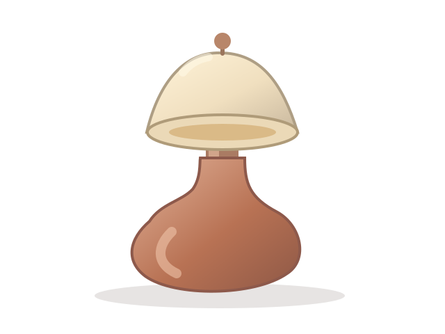
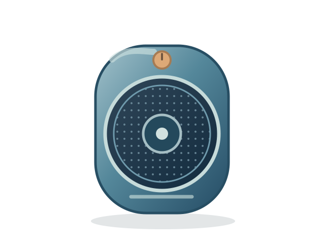

FX-118 · Floating display plinth

六套独立的实物展示 HTML/CSS 视觉原件、局部原生 JS 放大交互和四幅原创透明 SVG 物件。产品、材质、尺寸均为虚构的教学示例；本页不是电商、制造或产品测量应用。

可用鼠标或键盘方向键操作；滑杆实际改变当前插画的 CSS 缩放，不产生额外图像细节。

纯 CSS 的假想纹理对照，不代表真实表面反射率、光照或色彩标准。
原创 CSS 三面折页包装效果。
仅为实物展示视觉概念，不含实际印刷刀版或折叠工程数据。